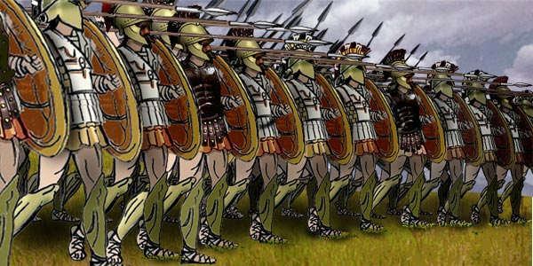
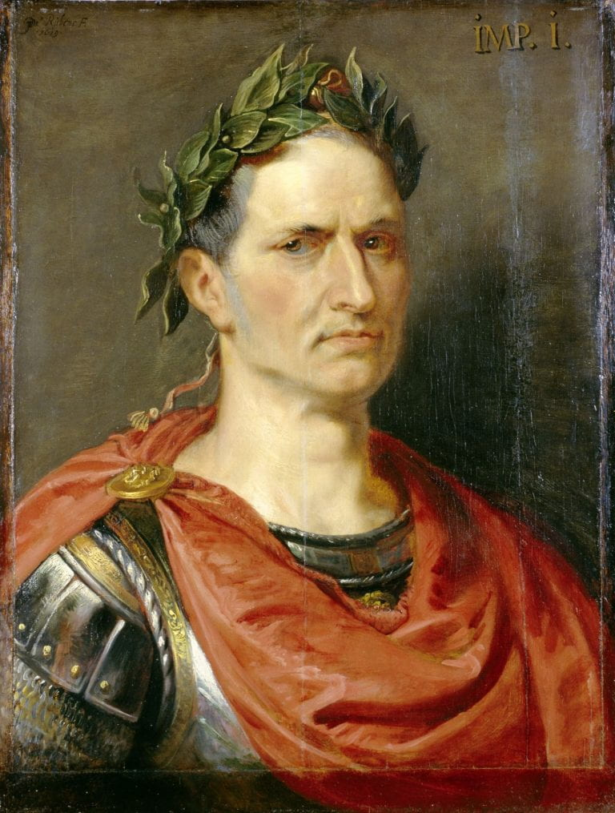

© 2026 Gabriel history inc. All rights reserved.
Human history is unfortunately steeped in violence, for as long as there have been civilizations, there have been people wanting to take over other peoples civilizations. In the early days these were just tribes of people, using sticks and rocks, but as time progressed, around the middle of the bronze age, something interesting happened, people started coordinating, working together to make stronger forces, having order and structure in combat, and of course, appointed the first Generals of history. Flash forward to modern day and the battlefield looks nothing like it used to, but the concept of a general, a leader on the field, the top of an army, remains the same. It has remained a constant throughout history that in order for an army to function someone had to be in control of the army, and we are going to be talking about those people, the Generals of History.


throughout human history there has been many individuals called a General, now, typically speaking, General is a specific rank, although what that rank means is different depending on the era, however for the purposes of this dive into history, we will be using the term general semi-loosely, using it to define any person through history who led large amount of troops during wartime. The people that with their mind, tactics, and soldiers, managed to lead armies to either victory or defeat, the most influential individuals on a single battlefield, and arguably, the most interesting to discuss.
There is, unfortunately, not a great way to answer this, there have been many Generals through history that some consider great, and others consider awful, but a few come to mind when talking about the best, people who use strategies others don’t think of, people who can make a much smaller force beat a much larger force, people who understand logistics, all of these are the corner stones to effective military leadership, and you see it repeated through history, check out the list below for some examples of the best.